LazyLog: A New Shared Log Abstraction for Low-Latency Applications
This page was written by an AI model to give a high-level overview of the paper. Please check the paper for detail: ACM Digital Library.
A shared log is a fault-tolerant, totally ordered sequence of records that many clients append to and read from. Systems such as Corfu and Scalog provide this abstraction across multiple storage shards with linearizable ordering: an append of record B that starts after another append A completes is guaranteed to be ordered after A. Both systems enforce this order eagerly, in the critical path of every append, before acknowledging the client. In Scalog, records are first replicated within a shard, then batched and sent to a Paxos-based global ordering layer that fixes their position; Scalog reports mean append latencies of 1 to 2 ms even at low throughput. In Corfu, a client gets a position from a sequencer and then writes the record through a client-driven chain across replicas, which with three replicas costs four round trips.
Both costs, replicating within a shard and ordering globally across shards, come from the same design choice: binding a record to its final position before the append returns. That binding requires coordination, and coordination is what makes appends slow. Prior work that defers coordination, such as Skyros, only defers the shard-internal replication cost for a single shard; it does not touch the cost of ordering across shards, which is the larger latency contributor in multi-shard shared logs.
The authors' observation is that in many real shared-log applications, linearizable order is necessary but not needed immediately at append time; it is only needed later, when the data is read. They point to distributed databases with writer/reader separation, event sourcing, message queues, high-availability journals, activity logging, and log aggregation (Section 3.1 of the paper) as cases where writers only need durability and readers consume updates well after they were written, often seconds, minutes, or longer afterward.
LazyLog is a shared-log abstraction built on this observation: append makes a record durable and returns only a success flag, not a position; the record is bound to its correct linearizable position lazily, in the background, but that binding is always completed before the position can be read. The authors build two systems implementing LazyLog, Erwin-■ (black-box) and Erwin-st (scalable throughput). Both write records in the critical path only to a small, fault-tolerant sequencing layer, without any coordination among the sequencing replicas, so appends complete in a single round trip (1RTT). A background process then establishes the global order from the sequencing replicas' logs and pushes ordered records to the storage shards, which serve reads only up to the point where ordering is confirmed stable.
Measured at matched throughput against the authors' own Corfu implementation and the open-source Scalog artifact, Erwin reduces append latency by up to 3.8x over Corfu and by two orders of magnitude over Scalog. Because reads in the paper's target applications lag behind writes, reads rarely take the slow (ordering-wait) path and their latency stays close to that of an eager-ordering log.
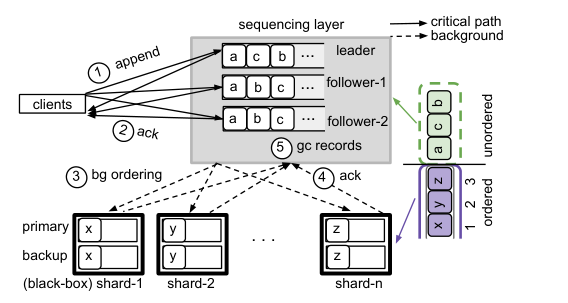
Key takeaways
- LazyLog defers binding a record to its linearizable position from append time to read time, exploiting the fact that many shared-log applications do not need the position immediately and readers lag behind writers.
- The API changes in one place:
appendreturns only a durability flag, not a position;read,checkTail, andtrimare unchanged. - Erwin-■ and Erwin-st both write only to a small, coordination-free sequencing layer in the critical path, completing appends in 1RTT; a background process establishes order and pushes records to storage shards.
- Erwin-■ treats shards as unmodified black boxes (it can bolt onto existing systems like Kafka); Erwin-st splits data and metadata so throughput scales with the number of shards even for large records.
- At matched throughput, Erwin cuts append latency up to 3.8x versus Corfu and by two orders of magnitude versus Scalog; reads incur little to no added latency in applications where writers and readers are time-decoupled.
From eager ordering to lazy binding
Why conventional shared logs are slow, the LazyLog abstraction, and the two systems (Erwin-■ and Erwin-st) that implement it.
1 · Shared logs: the conventional interface
A shared log offers four operations: append stores a record and returns the position assigned to it; read takes a position and returns the record there; checkTail returns the number of durable records; trim garbage-collects a prefix. The log guarantees linearizable ordering: if append B starts after append A completes, B is ordered after A. Many shared logs (Corfu, Scalog, and others) spread records across multiple storage shards while still providing one total order across all of them, which is what distributed databases, metadata stores, and state-machine replication are built on.
2 · Why eager ordering is slow
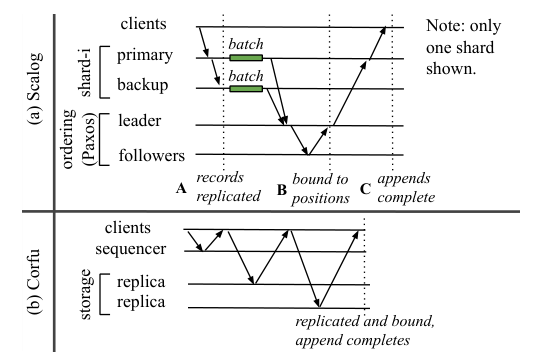
Existing multi-shard shared logs bind a record to its global position before acknowledging the append, and that binding needs coordination. Scalog's primaries replicate records to backups within a shard (local order), then periodically batch and send log lengths to a Paxos-based ordering layer that computes a global "cut" and assigns positions; only after this does the shard acknowledge the client. Corfu's client instead gets a position from a sequencer and then writes the record through a client-driven chain across the shard's replicas, taking multiple round trips (4RTT with three replicas) before the position is actually bound. Both designs pay replication-within-a-shard cost and cross-shard ordering cost on the append's critical path.
3 · The insight: order is needed at read time, not append time
The paper surveys applications where linearizable order is required but not needed the instant a record is appended, and where reads lag writes in time: databases that separate readers from writers (readers consume "at their own pace"), event sourcing (CQRS deliberately separates writes from the views readers query), message queues (consumers often run slower than producers), high-availability journals (read only on fail-over), activity logging and log aggregation (analytics and postmortem debugging run offline or on a delay). In all of these, a shared log has time, after the append and before the eventual read, to work out the order in the background.
4 · The LazyLog abstraction
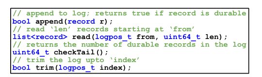
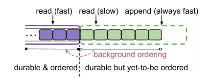
LazyLog keeps the same durability and ordering guarantees as a conventional shared log but changes when binding happens. append makes the record durable and returns a flag, not a position; there is no eager position to return. The log always has two logical portions: a durable-and-ordered prefix and a durable-but-not-yet-ordered tail, with a background process continually moving records from the second into the first. A read to a position in the ordered portion is fast; a read to the unordered portion must wait for background ordering to catch up to that position, a slow path. Because background ordering can run ahead of most reads in the target applications, slow-path reads are rare in practice; even where they are not, LazyLog shifts the ordering cost from appends to reads rather than adding new cost overall.
5 · Erwin-■: ordering across unmodified shards
Erwin-■ is designed to work with off-the-shelf shards (primary-backup, Paxos-based, or even per-shard-ordering systems like Kafka) by treating them as black boxes. Its architecture has a small, fault-tolerant sequencing layer (typically f+1 replicas) in front of the shards.
- Append. Clients write the full record directly to all sequencing replicas in parallel, with no coordination among those replicas. Once all replicas acknowledge, the append is durable and completes in 1RTT. The record's global position is not yet known.
- Why ordering is still recoverable despite no coordination. If append B starts in real time only after append A has completed, A is guaranteed to already be present on every sequencing replica when B starts, so B appears after A in every replica's log. Only concurrent appends can appear in different relative orders across replicas, so one replica's log (the leader's) can be used to pick a consistent total order.
- Background ordering. The sequencing leader periodically takes a batch of as-yet-unordered records, assigns them positions starting after the last confirmed position, and maps each position to a shard with a deterministic function (position mod number of shards, as in Corfu). It pushes the records to the shards, which replicate them with their normal protocol and acknowledge.
- Stable-gp. Only after every shard has acknowledged and every sequencing replica has garbage-collected the batch and advanced its own ordering counter does the leader advance a counter called stable-gp. Shards may serve reads only up to stable-gp. This ordering of steps (garbage-collect everywhere, then advance stable-gp) is what keeps a previously exposed read order from ever changing after a leader failure.
- Reads. Clients locate the shard for a position with the deterministic mapping and read from it; the shard serves the read immediately if the position is at or below stable-gp, or waits for stable-gp to catch up otherwise.
- Failure handling. A control plane (ZooKeeper plus a stateless controller) detects a sequencing-replica failure, seals the current view so no new appends can complete in it, flushes the unordered records from any one surviving replica of that view (any replica is safe to pick, since it holds everything that could have been acknowledged), and starts a new view. The stable-gp invariant guarantees that already-exposed order is never rewritten during this recovery.
Because the sequencing layer only needs short-term durability (records are garbage-collected once safe on shards), it can be kept in memory and run much faster than a disk-backed shard, letting it front several shards at once. Numeric results for Erwin-■ (throughput versus record size, Kafka black-box total order) are in the Evaluation tab.
6 · Erwin-st: scaling throughput for large records
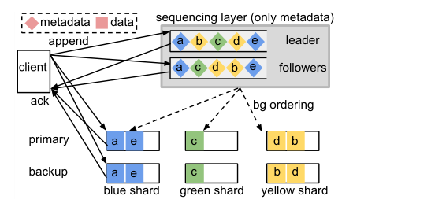
In Erwin-■, every record passes through the sequencing layer, so for large records (for example 4 KB) the sequencing layer becomes a throughput bottleneck. Erwin-st fixes this by splitting each record into its data and a small piece of metadata (a record-id and the shard it is written to).
- Append. A client writes the record's data directly, in parallel, to the replicas of a shard it chooses (as in Scalog), and in parallel writes only the metadata tuple to the sequencing replicas, with no coordination in either path. Once both sets of writes are acknowledged, the append is durable in 1RTT.
- Background ordering. Identical in spirit to Erwin-■, except the sequencing leader assigns positions to metadata identifiers and pushes only the ordering information (which record goes to which position) to the shard primaries; the shard primary then reorders and acknowledges, using data it already has locally.
- Reads. Because clients, not a fixed formula, choose which shard a record goes to, a reader cannot compute the shard for a position directly. Shards store the position-to-shard metadata log sent by the sequencing leader; a client looks this up (and caches the mapping for many positions at once) to find the right shard, then reads from it, subject to the same stable-gp rule as Erwin-■.
- Client failures. Erwin-st must additionally handle the case where data reaches a shard without matching metadata (harmless orphan records, cleaned up by periodic scrubbing) and the case where metadata reaches the sequencing layer without matching data (the shard times out waiting for the record and writes a no-op in its place, which readers ignore).
Because Erwin-st routes data directly to shards and only lightweight metadata through the sequencing layer, its throughput scales with the number of shards, like Corfu, rather than being capped by the sequencing layer's capacity on data, as Erwin-■ is. Numeric scaling results are in the Evaluation tab.
7 · What the paper says this design gives up
- Scalability versus Scalog. Scalog achieves its scalability by having shards batch and contact the ordering layer in the critical path, which is fundamentally at odds with low latency. Erwin-st scales like Corfu (with shards, bottlenecked by the sequencing layer) but cannot reach Scalog's scalability; the authors frame this as a deliberate trade-off suited to applications that want reasonably high throughput at low latency rather than maximum scalability.
- Writers that need their position immediately. LazyLog does not suit applications that must know a record's position right after appending it. The authors note this is not fundamental: an optional
appendSynccall could be added that eagerly orders a record at the cost of latency, for the rare cases that need it. - Reconfiguration on sequencing-replica failure. Because clients write to all sequencing replicas, a failure triggers a reconfiguration (detect, seal, flush, start new view) rather than simply continuing with a quorum. The authors argue this is not a fundamental limitation and sketch a supermajority-write variant, borrowed from prior 1RTT replication protocols, as future work to tolerate more failures and stragglers.
8 · Implementation
Erwin is implemented in about 8K lines of C++. Clients use eRPC to talk to the sequencing layer and shards. On the sequencing layer, each replica's log is a ring buffer; a separate background process reads the unordered portion and pushes records (or, in Erwin-st, metadata) to shards, using RDMA reads to avoid interrupting the sequencing leader's CPU and RDMA writes to advance head pointers (garbage collection) on remote replicas. Shards use primary-backup replication and store their log across multiple fixed-size files, caching files once read so repeat reads are served from memory. Numeric results for all of these mechanisms appear in the Evaluation tab.
Evaluation
Setup, the paper's key figures in order, and what each shows about lazy versus eager ordering.
Most experiments ran on a CloudLab xl170 cluster, with up to five shards available at once; a separate, larger CloudLab cluster (c6525-25g) was used for the scaling experiment that needs more than five shards. The sequencing layer used three replicas (one leader, two followers); each shard had one primary and one or two backups. The default micro-benchmark is append-only with 4 KB records. Three end applications (a decoupled key-value store, log aggregation, and journaled stream processing) were also built and measured.
| What | Value in the paper |
|---|---|
| Platform | CloudLab xl170: Intel 10-core E5-2640v4, 64 GB DRAM, 25 Gb Mellanox ConnectX-4 NIC, 480 GB SATA SSD; c6525-25g used for >5-shard scaling |
| Workloads | Append-only, 4 KB records (default micro-benchmark); YCSB Load/A/B for the KV store app; a 50/50 read/write transaction mix for log aggregation; word-count checkpointing for stream processing |
| Baselines | Corfu (reimplemented by the authors), Scalog (public open-source artifact), standalone Apache Kafka |
| Metrics | Mean and p99 append/read latency, throughput (appends/s), end-to-end application request or transaction latency |
When reads lag behind appends, Erwin's reads cost about as much as Corfu's, while its appends are much cheaper
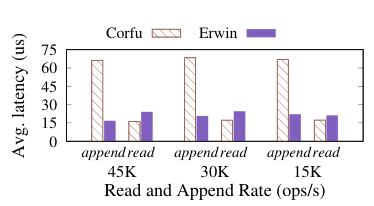
What it shows. Average append and read latency (microseconds) for Corfu and Erwin, run at three append/read rates (15K, 30K, and 45K ops/s), with reads lagging appends by a small 3 ms window, mirroring the time gap seen in applications like message queues and activity logging.
What to take from it. At every rate tested, Erwin's append latency is lower than Corfu's, consistent with Erwin's 1RTT append path. Because the 3 ms lag gives Erwin's background process time to finish ordering before the read arrives, Erwin's read latency closely tracks Corfu's, with only a small increase from reads contending with Erwin's background write batches on the storage shards.
Without any lag, reads pay the ordering cost, but batching limits how much
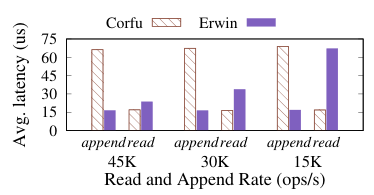
What it shows. The same latency comparison as Result 1, but with readers aggressively reading immediately after each append, so there is no time gap for background ordering to run ahead.
What to take from it. Appends remain cheaper in Erwin than Corfu, but reads now take the slow path more often and are slower than Corfu's. At the higher rate tested (45K), the background process can order many records in one large batch, so only the first read into a newly ordered batch is slow and the rest are fast, keeping Erwin's reads only slightly behind Corfu's; at lower rates, with less batching, more reads are slow. The paper notes that even in this worst case, Erwin preserves Corfu's overall cost, just shifted from appends to reads.
Periodic tail-reads benefit from longer gaps between reads
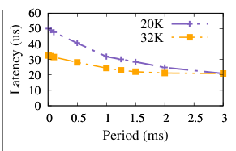
What it shows. Average read latency as a function of the period between successive checkTail-then-read-to-tail operations (0 to 3 ms), at two append rates, 20K and 32K appends/s.
What to take from it. Longer periods let more appends accumulate before a read, giving the background orderer time to clear the backlog, so latency is low at long periods (for example 3 ms) and rises as the period shrinks and more reads catch the unordered tail. The higher append rate (32K) gives more batching opportunity and so shows lower latency than 20K at the same period, matching the batching effect in Result 2.
Erwin-■'s throughput is high for small records but flattens for large ones
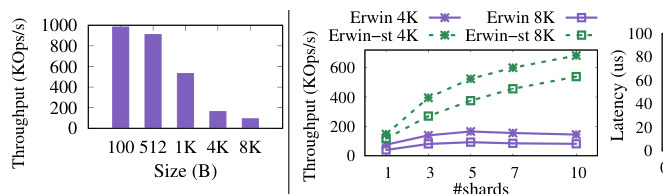
What it shows. Append throughput (KOps/s) of Erwin-■ as record size grows from 100 B to 8 KB.
What to take from it. Erwin-■ sustains roughly 1M appends/s at 100-byte records, suiting deployments dominated by small records, but because every record's data passes through the sequencing layer, throughput flattens as records grow toward 4 to 8 KB, since the sequencing layer becomes the bottleneck. This motivates Erwin-st's data/metadata split (see Result in the "How It Works" tab, Section 6).
Erwin-st reads also avoid overhead when reads lag appends
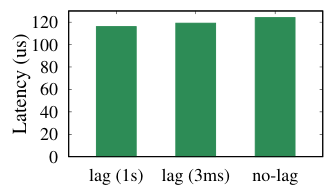
What it shows. Average read latency in Erwin-st under three conditions: reads lagging appends by 1 second, reads lagging by 3 ms, and no lag, reading 25 records at a time, at a higher append/read rate (200K) than the Erwin-■ experiments.
What to take from it. With a 1-second lag, essentially no reads take the slow path and latency is low. Even with no lag at all, very few reads are slow, so latency stays only slightly higher than the 1-second-lag case. Reading one record at a time brings Erwin-st's latency close to Erwin-■'s, since Erwin-st clients cache the position-to-shard mapping and avoid an extra round trip.
Erwin-■ adds linearizable total order across unmodified Kafka shards at much lower latency than Kafka itself provides without it
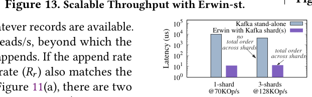
What it shows. Append latency (log scale, microseconds) for standalone Kafka (which gives only per-shard order, not total order) versus Erwin-■ using Kafka shards underneath (which gives linearizable total order across shards), tested with 1 shard at 70K ops/s and 3 shards at 128K ops/s.
What to take from it. With one shard, Erwin-■ on Kafka reduces latency by three orders of magnitude relative to standalone Kafka; with three shards, it offers similar latency benefits while additionally providing linearizable total order that standalone Kafka does not offer at all. This demonstrates Erwin-■'s black-box design: it can be bolted onto an existing per-shard-ordering system to add cross-shard total order without rewriting the shard.
Erwin-st can add a shard mid-workload with no downtime
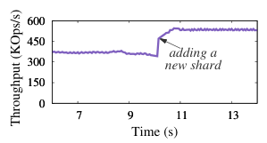
What it shows. Append throughput (KOps/s) over time (seconds 7 to 13) as a new shard is added to a running Erwin-st deployment.
What to take from it. Throughput rises as soon as the new shard is added and clients begin writing to it, with no interruption to the ongoing workload. This mirrors Scalog's ability to seamlessly add or remove shards, which Erwin-st inherits because, like Scalog and unlike Corfu, it lets clients choose the target shard rather than using a fixed position-to-shard formula.
FAQ
Q·What does "lazy" mean here, versus a normal shared log?▾
In a normal (eager) shared log, an append is not acknowledged until the record has been assigned its final, fault-tolerant global position. In LazyLog, an append is acknowledged as soon as the record is durable; its global position is worked out afterward, in the background, and is only guaranteed to be finalized before that position can be read.
Q·Isn't deferring ordering risky for correctness?▾
No: LazyLog still guarantees linearizable order, it just enforces the guarantee at read time instead of append time. The system tracks a "stable" boundary (stable-gp) up to which ordering is finalized and permanent; reads to positions beyond that boundary simply wait until the background process catches up. A position is never exposed to a reader before its order is fixed, so no reader can ever observe an order that later changes.
Q·How is this different from eventual consistency?▾
Eventually consistent systems can let readers observe an order or value that later changes or converges. LazyLog never does this: it withholds reads to a position until that position's order is permanently fixed. The "laziness" is only about when the binding work happens, not about weakening what a completed read can observe.
Q·What happens if an application reads a record right after appending it?▾
That read takes the "slow path": the shard waits until background ordering has advanced far enough to cover that position before serving the read. If appends happen at a high enough rate for the background process to batch many records together, only the first such read per batch is slow. In the worst case (low rate, no batching), LazyLog's combined append-plus-read cost matches, but does not exceed, what an eager-ordering log like Corfu would have cost on the append alone.
Q·Why are there two systems, Erwin-■ and Erwin-st?▾
They target different constraints. Erwin-■ treats storage shards as unmodified black boxes (so it can sit in front of systems like Kafka), but because full records pass through its sequencing layer, its throughput flattens for large records. Erwin-st modifies the shards slightly so that only small metadata, not the record data, passes through the sequencing layer, which lets its throughput scale with the number of shards even for large records.
Q·How can replicas agree on an order without coordinating?▾
They rely on real-time causality rather than explicit agreement. If append B starts only after append A has already completed, A is guaranteed to be present on every sequencing replica by the time B is written, so every replica's log will show A before B. Only appends that happen concurrently can show up in different relative orders on different replicas, and the system picks one replica (the leader) as the tie-breaker for those cases.
Q·What is stable-gp and why does the order of operations around it matter?▾
Stable-gp is a counter marking the highest log position whose binding is permanent. It is only advanced after every shard has durably stored its assigned records and every sequencing replica has garbage-collected those records and updated its own bookkeeping. Doing it in this order ensures that if the sequencing leader then fails, the replica chosen for recovery can never produce an order different from one that was already exposed to a reader.
Q·What happens if the sequencing leader crashes?▾
A control plane (built on ZooKeeper) detects the failure, seals the current view so no further appends can complete in it, picks any surviving sequencing replica to flush its remaining unordered records to the shards starting from its own last confirmed position, and starts a new view with a new leader. Because any replica holds everything that could have been acknowledged (acknowledgment required all replicas to have the record), this recovery is always safe, and the stable-gp invariant prevents it from rewriting already-exposed order.
Q·How does Erwin-■ add total order to Kafka without modifying it?▾
Kafka shards are used purely as storage: Erwin's sequencing layer absorbs appends in the critical path, and its background process later pushes ordered records into the appropriate Kafka shard and reads the resulting metadata log to confirm positions. Kafka only needs to support appending an entry, reading an entry at an index, and a way to logically overwrite tail entries during recovery, none of which requires changing Kafka's internals.
Q·Why can't Erwin-st match Scalog's scalability?▾
Scalog gets its scalability by having shards batch records and contact a global ordering layer before acknowledging appends, which is exactly the critical-path coordination LazyLog is designed to avoid. Deferring that step to the background, as Erwin-st does, trades away some of Scalog's scaling headroom in exchange for much lower append latency. The authors call this a deliberate trade-off, not a shortcoming, aimed at applications that want good throughput with low latency rather than maximum scale at the cost of latency.
Q·Does every application benefit from LazyLog?▾
No. Applications that need to know a record's exact position the moment it is appended do not fit the model, since LazyLog's append deliberately does not return a position. The authors suggest such cases could be handled by an optional eager appendSync call layered on top, at the cost of its latency, but LazyLog's default benefit is for the (common, per the paper's application survey) case where position is not needed immediately and reads lag writes.
Q·How much faster is LazyLog (Erwin) than Corfu and Scalog, in the paper's numbers?▾
At matched throughput with 4 KB records, Erwin cuts mean and p99 append latency by up to 3.8x compared to the authors' own Corfu implementation, and by two orders of magnitude compared to the open-source Scalog artifact, even though the underlying per-shard replication latency of Erwin's and Scalog's shards is almost identical in isolation.